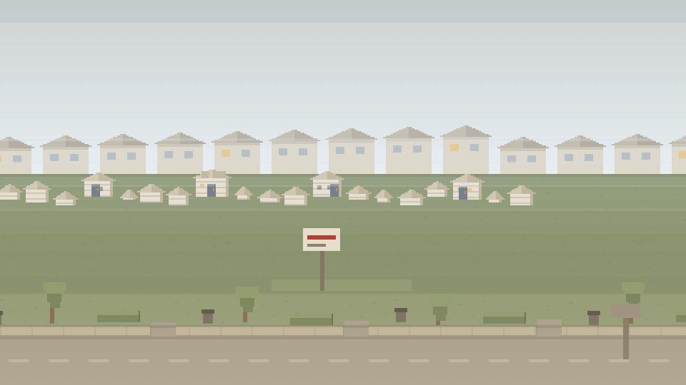
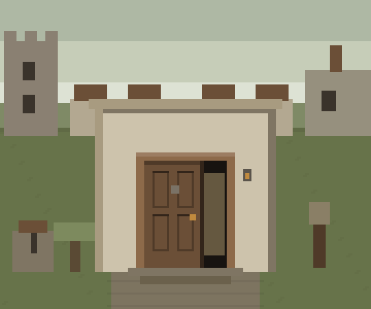
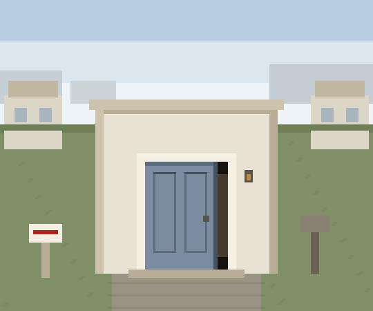

Every machine on this floor trains one piece of the same read: what a property is worth, what it needs, and what the person selling it actually wants.

Knock doors, buy ground, and climb eight eras from a pole stapler to whatever comes after the crash. An idle game with a phone that rings.

One house at a time, sixty seconds on the clock: flip it, hold it, take the payments, run the listing, or walk. The desk's own arithmetic decides who was right, and tells you by how much.

Three streets a day, the same three for everybody playing today. Looks cost you time, the offer is sealed, and the other buyers already made theirs.
The arcade is where the instinct gets cheap repetitions. When you want to run a real address, the desk does the same arithmetic with your numbers in it.
Open the desk →